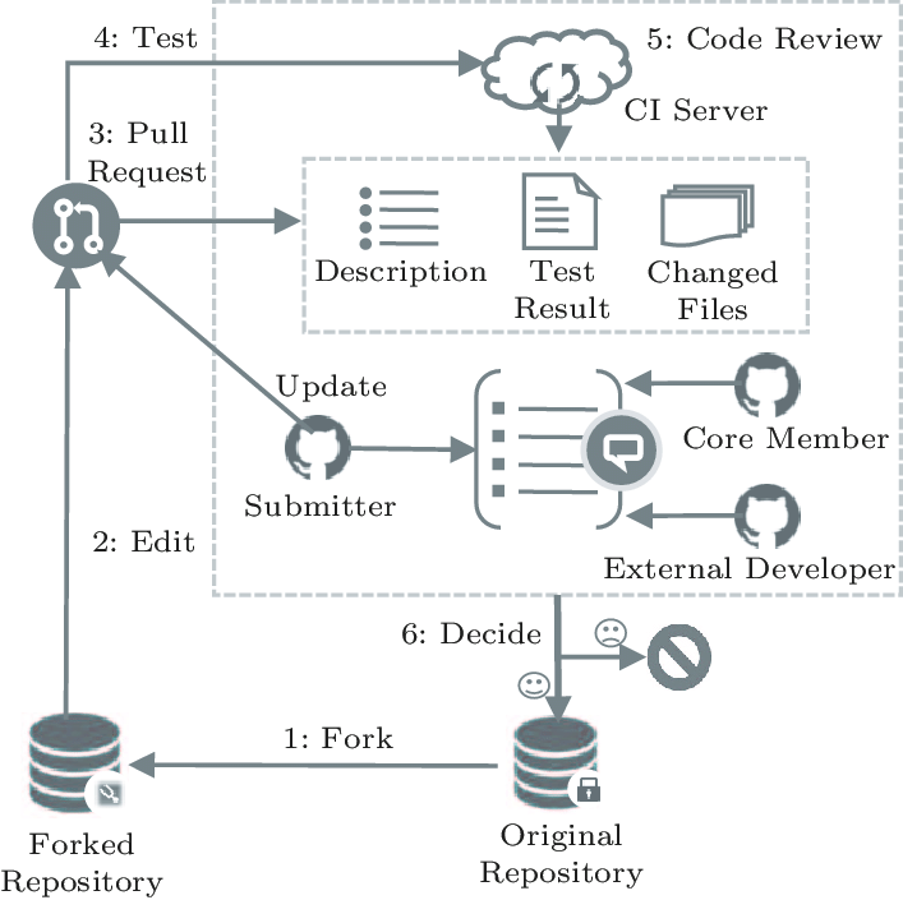
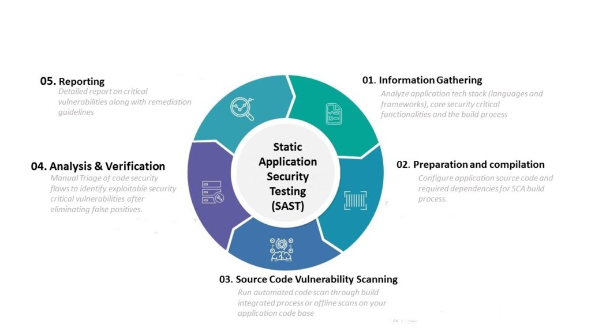
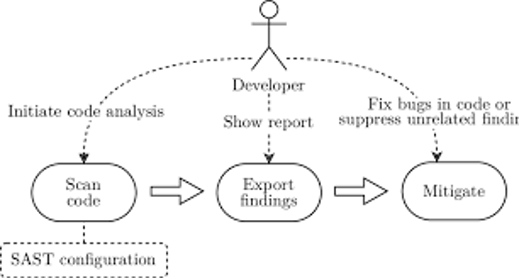
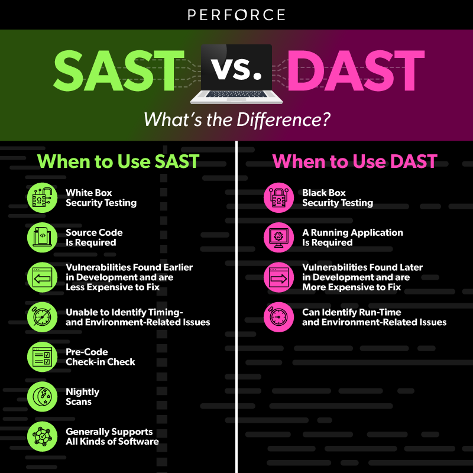
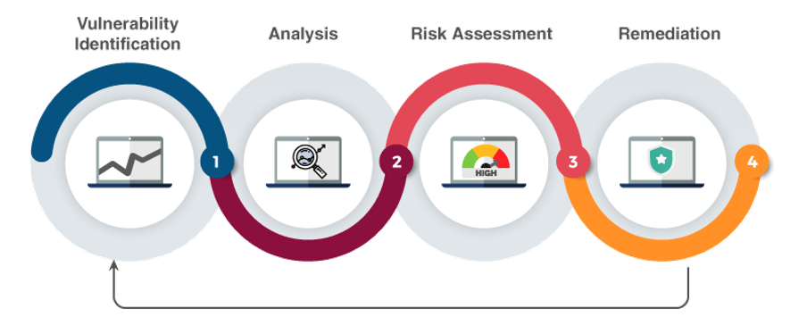
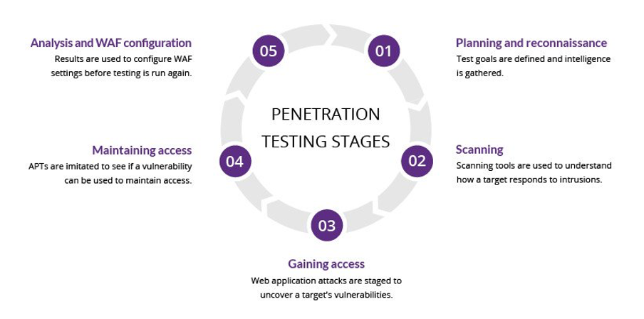

Syllabus
Apply and evaluate strategies used by software developers to manage the security of programming code:
- code review
- static application security testing (SAST)
- dynamic application security testing (DAST)
- vulnerability assessment
- penetration testing
Learning Intention and Success Criteria
Learning Intention - Students will:
- Understand the strategies software developers use to manage and improve the security of programming code.
- Learn about the various testing methods and assessments used to identify and address security vulnerabilities in code.
Success Criteria - Students can:
- Students will be able to explain different strategies used to evaluate and secure programming code.
- Students will understand how to identify security flaws by applying code reviews, static and dynamic testing, vulnerability assessments, and penetration testing.
- Students will evaluate the effectiveness of these strategies in real-world software development.
Content
Code review
Sources of Error
Often, as programmers, we overlook errors within the code we write. This can stem from any number of reasons. Personal bias may be up there, and it is the same with negligence, but a far more frequent source of such errors comes from our understanding. We understand this code and believe it's the best way to do this specific task because we wrote it. We often don't see a need to question or refine our approach, not because of ego, but simply because we don't spare any more thought to our ideas and how we implement
The idea is that when a programmer needs to debug their code, they should explain the program line-by-line to a rubber duck. This results in a greater depth of code analysis and can help identify problem areas or find better approaches to issues. If your code is errored and you feel stuck, this might be one way to think through your problem rationally. And don't worry; you don't need a don't duck for this; it's purely metaphoricit'sYou can explain your code to any object, toy, dog, cat, or some fancy esoteric pet you might have around, or even.
As incredible as chatting to a rubber duck about your code may sound, it doesn't precisely. And, of course, the duck can't exactly talk, meaning you're stuck with your thoughts throughout the process. Sure, the thoughts might be more organised, but that doesn't always help; it's fresh out of you and doesn't account for sources of mistakes, bias and overconfidence, for example.
That's why we are involved in the process! Another person can bring a fresh perspective to your code and, this time around, even voice it. Of course, it's better if they are themselves programmers, even better if they have more knowledge to share, and even better if they are part of your team.
Professional Setting
If you are in a professional setting, or specifically in an experienced team, running your code by others to identify errors or mistakes is called a Code Review.
This has several aspects to it, though most organisations will have this as a last 'sanity check' before the code is deployed or added to the project but after the bots and testing software have had their way with it (we will cover these in the following sections), though some may place it before. Generally, these are done in the text through comments, as nobody has the time to hold a meeting after every change of code, but everyone has time to write up a couple of lines of text about some error they found while glancing the code over.
This is a more formal process than you may be used to. The scale of the professional software environment is much greater than the one you typically study in, with large teams cooperating on larger projects. So, let's run through an example code review in the developer platform you should all be familiar with at this point: GitHub.

Static application security testing (SAST)
Testing Software
We can have our digital tools check our code for us. They won’t be perfect either, as they can only do what we taught them to do. But they are accurate and can be relied on to do a job a relatively infinite amount of times without fail, which isn’t the case with people. As we saw prior, these are generally run after code is deemed “completed” by the programmer but can be run at any stage of development to ensure you’re on the right track.
Now, let’s look at our first digital Method of Testing.
SAST
Passive. That’s generally what the Static in the name represents. The defining characteristic of this testing method is that it looks through your code without running it.
The software used here is the programming equivalent of Microsoft Word Spellcheck. It looks through your code and tries to find possible issues and flaws based on information and patterns it has in its database. Generally, these are common flaws previously identified and added in. Much like our beloved Spellcheck holds a dictionary of words and checks grammar based on them, a SAST tool holds a dictionary of vulnerability patterns, meaning it works a bit in reverse, checking that none of these unsafe practices and patterns are within the code you give it. It then generates a report of its findings and recommendations for improving your code.

Let’s make an analogy that will help us contrast this methodology with another one later on. A SAST tool sits on the couch until you come and give it code to review. It takes out a highlighter and, still on the couch, circles everything you got wrong. It returns it to you, tells you what you should do, and keeps you sitting on the couch.
If that sounds a bit dull… It is, but there are two reasons. Firstly, it’s one-half of two methodologies used together, so hold your breath. Secondly, SAST tools are handy since they are pretty fast and tell you if you’re on the right track without using too much time or resources.

Dynamic application security testing (DAST)
DAST is a black-box testing method that evaluates an application's security while running. It simulates external attacks on the application to identify vulnerabilities that attackers could exploit.
How DAST Works:
-
Testing in a Live Environment:
DAST tools simulate attacks on the running application by sending inputs, such as malformed requests or known attack patterns, to see how the application responds. -
Common Tools:
Tools like OWASP ZAP (Zed Attack Proxy) and Burp Suite perform DAST by identifying security issues such as cross-site scripting (XSS), insecure authentication mechanisms, and weak session management.

Vulnerability assessment
The Vulnerability Assessment process, a comprehensive approach to system security, involves identifying, quantifying, and prioritising vulnerabilities within a system. Programmers are responsible for ensuring the system's security by conducting checks before sending the code for review or production. This assessment entails a thorough analysis and documentation, typically a checklist of items to be reviewed and verified, ensuring robust system security.

In an extensive application, the process generally includes the following steps:
1. Identifying possible vulnerabilities.
2. Analysing the findings to determine potential issues and risks associated with the identified vulnerabilities.
3. Perform a risk assessment to evaluate the likelihood and consequences of each risk and prioritise the risks for mitigation.
4. Remediation of the identified risks and vulnerabilities may involve removing vulnerabilities, managing risks in alternative ways, and establishing preventive measures or contingencies for potential risks.
Penetration testing
On the other hand, Penetration Testing involves simulating cyberattacks to evaluate a system's security. It is an authorised attempt to breach Penetration testing, often called "pen testing," which simulates real-world cyberattacks to identify security vulnerabilities that malicious actors could exploit. Pen testing helps determine an application's security posture by actively attempting to breach its defences.
How Penetration Testing Works:
-
Simulated Attacks:
Ethical hackers (pen testers) use various methods to exploit known and unknown vulnerabilities in a system. This can include attempting to bypass authentication, gain access to sensitive data, or escalate privileges. -
Manual and Automated Approaches:
Pen testers use automated tools and manual techniques to simulate realistic attacks. Tools like Metasploit and Kali Linux are often used alongside manual methods to perform penetration tests.

This process typically follows a five-step approach:
1. Planning and reconnaissance: Gathering information about the target system.
2. Scanning: Using tools to understand how the target system responds to various intrusion attempts.
3. Gaining Access: Attempting to exploit vulnerabilities to gain access to the system.
4. Maintaining Access: Trying to sustain access to achieve the test's goals while overcoming protective measures.
5. Analysis and Reporting: Compiling the results and providing recommendations based on the penetration test findings.
Activity